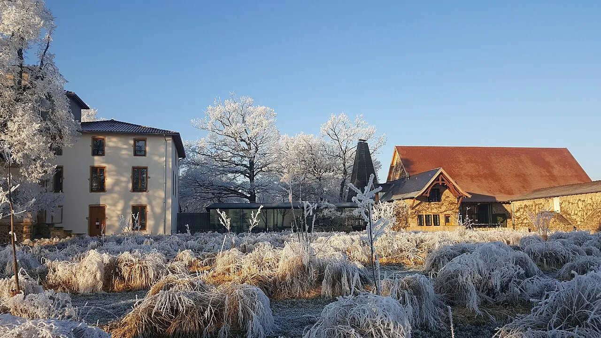

Sleep on the estate. Anchor the day on the close-in medieval pair. Treat Sunday morning as a single binary choice.
The walk-home-from-a-three-star-dinner problem is the only real friction in this weekend. Two Troisgros-family lodgings — Le Bois Dormant and Le Pré Cheval — share the same 17-hectare grounds as the restaurant[2][33]. The only non-Troisgros bed with a built-in answer is Château d'Origny, whose differentiator is a free return shuttle, not the suites[5]. Outside the estate the village has no sidewalks for the 0.7–1 km walk; Troisgros itself lists only two partner taxis and tells guests to book the return with the reservation[1].

the house, in its meadow
service runs late — book the return ↘↙ dress code via the reservation desk
no sidewalks · bring a torch if you walk
⚠ closed Sun/Mon evenings. Pick if one of two couples golfs[11].
II.
Saturday Afternoon — the close-in pair
Low-risk circuit · 26 km · 0 ticket booth
Sat · 14:00 – 17:00
Park outside the gate. Walk the enclosure.
14:00Saint-Haon-le-Châtel
11 min NW · the only Loire commune still bounded by its full medieval enclosure — 18 towers, 4 gates, a moat, a Romanesque church and a hundred-plant garden[12].
15:30Prieuré d'Ambierle
15 min NW · Cluniac priory; centrepiece a 5.60 m polyptych dated 1466, attributed by the Bulletin Monumental to the workshop of Rogier van der Weyden[13].
16:15Musée Alice Taverne(if open)
Same village. 18th-c. house recreating Roannais-Forez rural life 1850-1940[29].
17:00Return to Ouches
Dress for dinner. Service du soir at Troisgros.
Côte Roannaise's two flagship cellars close on Sundays — move wine here or skip cellars entirely. Sérol opens 9:00 walk-in (biodynamic Gamay Saint-Romain)[21]; Domaine des Pothiers is Saturday-by-appointment[22].
An "Apéros de la Côte" programme from June packages ~15 estates into 1h30 visits with a 4-wine tasting, €18 pp — the friction-free way[28].
Within 30 km the IT scene is thin — Roanne is the only hub, and there is no weekend IT conference in 2026. The single weekend-aligned tech event is the Fête de la Science / Village des Sciences in Roanne, 2–12 October 2026[31]. If a conference must anchor the trip, anchor on SIDO Lyon (annual September IoT/AI/XR fair, ~85 km — about an hour's drive)[32] and treat Troisgros as the Saturday-night anchor of a Lyon-week trip.
IV.
Before you book
The one gap in the research
The dinner mechanics — tasting-menu vs. à-la-carte pricing, wine-pairing cost, meal length as Saturday's time anchor, dress code, reservation lead time, whether the table books with a room — were the constraint feeding every sub-topic but were not researched directly. Confirm them with the restaurant via troisgros.fr/en/access[1]. The answers decide whether Le Bois Dormant's room-and-table package is a real discount or just a logistical convenience.